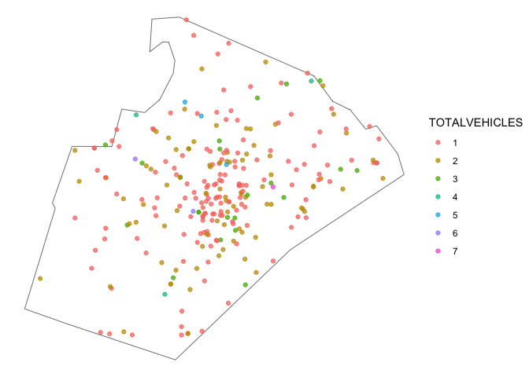

The goal of the crashapi R package is to provide functions for downloading data from the National Highway Traffic Safety Administration (NHTSA) Fatality Analysis Reporting System (FARS) API.
What is FARS? NHTSA explains: “The Fatality Analysis Reporting System (FARS) contains data on all vehicle crashes in the United States that occur on a public roadway and involve a fatality.”
Installation
You can install the development version of crashapi using the pak package:
pak::pkg_install("elipousson/crashapi")Background
Fatality Analysis Reporting System (FARS) API support
Supported APIs for this package include:
- Get Crash List Information
- Get Crash Details
- Get Crashes By Location
- Get Crashes By Vehicle
- Get Summary Counts
- Get Variables and Get Variable Attributes
- Get FARS Data By Year
- Get Crashes By Occupant (partial support)
Most of these APIs support XML, JSV, CSV, and JSON output formats. This package only uses JSON with the exception of get_fars_year() (which supports downloading CSV files).
For reference, this package also includes a list of terms and NHTSA technical definitions in fars_terms and a list of variable labels in fars_vars_labels.
The FARS API currently provides access to data from 2010 to 2020. The NHTSA website also provides additional information on the release data and version status for the FARS data files available through the API:
| Data Year | File Version | Release Date |
|---|---|---|
| 2010 | Final | December 11, 2012 |
| 2011 | Final | November 13, 2013 |
| 2012 | Final | December 12, 2013 |
| 2013 | Final | December 14, 2014 |
| 2014 | Final | December 18, 2015 |
| 2015 | Final | December 16, 2016 |
| 2016 | Final | December 14, 2017 |
| 2017 | Final | December 18, 2018 |
| 2018 | Final | June 24, 2021 |
| 2019 | Final | March 2, 2022 |
| 2020 | Annual | March 2, 2022 |
Additional data access functionality
The get_fars_zip() function can be used to access FARS data files from 1975 to 2020 that that are not available via the API but are available for download on through the NHTSA File Downloads site as zipped CSV or SAS files (not available through the NHTSA FARS API). This site also provides extensive technical documentation on coding and use of the FARS data files.
Earlier data along with data from the the General Estimates System (GES) / Crash Report Sampling System (CRSS) is also available through the Fatality and Injury Reporting System Tool (FIRST).
Examples
Most features for the package can be accessed using the get_fars() function that selects the appropriate API-specific function based on the provided parameters. You can also set the API to use with the api parameter or use an API-specific function (e.g. get_fars_summary()).
For example, you can use the get_fars() access state-level summary data on crash and fatality counts.
# Get summary crash count and fatality count data for Maryland from 2010 to 2019
md_summary <-
get_fars(
year = c(2010, 2020),
state = "MD",
api = "summary count"
)
ggplot(md_summary, aes(x = case_year, y = total_fatal_counts)) +
geom_point(color = "red") +
geom_line(color = "red", group = 1) +
theme_minimal()
You can download crash data and set geometry to TRUE optionally convert the data frame into an sf object for mapping.
crashes_sf <-
get_fars(
year = c(2018, 2020),
state = "NC",
county = "Wake County",
geometry = TRUE
)
nc <- sf::st_read(system.file("shape/nc.shp", package = "sf"))
#> Reading layer `nc' from data source
#> `/Library/Frameworks/R.framework/Versions/4.2-arm64/Resources/library/sf/shape/nc.shp'
#> using driver `ESRI Shapefile'
#> Simple feature collection with 100 features and 14 fields
#> Geometry type: MULTIPOLYGON
#> Dimension: XY
#> Bounding box: xmin: -84.32385 ymin: 33.88199 xmax: -75.45698 ymax: 36.58965
#> Geodetic CRS: NAD27
wake_co <- sf::st_transform(nc[nc$NAME == "Wake",], 4326)
# Map crashes
ggplot() +
geom_sf(
data = wake_co,
fill = NA, color = "black"
) +
geom_sf(
data = sf::st_crop(crashes_sf, wake_co),
aes(color = totalvehicles),
alpha = 0.75
) +
theme_void()
#> Warning in st_is_longlat(x): bounding box has potentially an invalid value range
#> for longlat data
#> Warning in st_is_longlat(x): bounding box has potentially an invalid value range
#> for longlat data
#> Warning: attribute variables are assumed to be spatially constant throughout all
#> geometries
You can list crashes and filter by the number of vehicles involved.
# Get fatal crashes in New York state from 2019 with 5 to 10 vehicles
get_fars(
year = 2019,
state = "NY",
vehicles = c(5, 10)
)
#> county_name crash_date fatals peds persons st_case state
#> 1 BRONX (5) /Date(1549865820000-0500)/ 2 1 7 360042 36
#> 2 ERIE (29) /Date(1551915000000-0500)/ 1 0 4 360159 36
#> 3 QUEENS (81) /Date(1561656240000-0400)/ 1 0 6 360319 36
#> 4 BRONX (5) /Date(1561866000000-0400)/ 1 0 11 360339 36
#> 5 KINGS (47) /Date(1564564080000-0400)/ 1 0 5 360440 36
#> 6 SUFFOLK (103) /Date(1563792360000-0400)/ 1 0 2 360551 36
#> 7 ORANGE (71) /Date(1558274040000-0400)/ 1 0 1 360277 36
#> state_name total_vehicles
#> 1 New York 5
#> 2 New York 5
#> 3 New York 5
#> 4 New York 5
#> 5 New York 5
#> 6 New York 6
#> 7 New York 6If you call get_fars() or get_fars_crashes() with details set to TRUE, additional information from get_fars_cases() (including the crash date and time) is appended to the crash data frame.
# Get fatal crashes for Anne Arundel County, MD for 2019 and append details
crashes_detailed <-
get_fars(
year = 2019,
state = "MD",
county = "Anne Arundel County",
details = TRUE
)
#> ■■■ 8% | ETA: 36s
#> ■■■■■■■■ 22% | ETA: 29s
#> ■■■■■■■■■■■ 32% | ETA: 25s
#> ■■■■■■■■■■■■■ 40% | ETA: 22s
#> ■■■■■■■■■■■■■■■ 48% | ETA: 19s
#> ■■■■■■■■■■■■■■■■■■ 57% | ETA: 16s
#> ■■■■■■■■■■■■■■■■■■■■■ 65% | ETA: 13s
#> ■■■■■■■■■■■■■■■■■■■■■■■ 75% | ETA: 9s
#> ■■■■■■■■■■■■■■■■■■■■■■■■■■ 82% | ETA: 6s
#> ■■■■■■■■■■■■■■■■■■■■■■■■■■■■ 90% | ETA: 4s
# Show 10 fatal crashes at random
dplyr::slice_sample(crashes_detailed, n = 10)
#> city cityname county countyname case_year fatals latitude
#> 1 0 NOT APPLICABLE 3 ANNE ARUNDEL (3) 2019 1 39.20516
#> 2 0 NOT APPLICABLE 3 ANNE ARUNDEL (3) 2019 2 39.17068
#> 3 0 NOT APPLICABLE 3 ANNE ARUNDEL (3) 2019 1 39.15161
#> 4 0 NOT APPLICABLE 3 ANNE ARUNDEL (3) 2019 1 38.79139
#> 5 0 NOT APPLICABLE 3 ANNE ARUNDEL (3) 2019 1 38.98216
#> 6 0 NOT APPLICABLE 3 ANNE ARUNDEL (3) 2019 1 39.17210
#> 7 0 NOT APPLICABLE 3 ANNE ARUNDEL (3) 2019 1 39.21617
#> 8 584 FRIENDSHIP 3 ANNE ARUNDEL (3) 2019 1 38.73677
#> 9 0 NOT APPLICABLE 3 ANNE ARUNDEL (3) 2019 1 39.19875
#> 10 0 NOT APPLICABLE 3 ANNE ARUNDEL (3) 2019 1 38.98078
#> longitud state statename st_case date time datetime
#> 1 -76.62121 24 Maryland 240192 2019-07-05 12:41 2019-07-05 12:41:00
#> 2 -76.73092 24 Maryland 240169 2019-06-14 22:30 2019-06-14 22:30:00
#> 3 -76.63751 24 Maryland 240046 2019-02-16 11:43 2019-02-16 11:43:00
#> 4 -76.66008 24 Maryland 240450 2019-12-21 21:58 2019-12-21 21:58:00
#> 5 -76.53157 24 Maryland 240116 2019-04-22 08:00 2019-04-22 08:00:00
#> 6 -76.60841 24 Maryland 240149 2019-06-02 13:07 2019-06-02 13:07:00
#> 7 -76.69841 24 Maryland 240069 2019-03-15 01:26 2019-03-15 01:26:00
#> 8 -76.59366 24 Maryland 240318 2019-09-20 19:16 2019-09-20 19:16:00
#> 9 -76.67271 24 Maryland 240236 2019-07-30 17:54 2019-07-30 17:54:00
#> 10 -76.52712 24 Maryland 240421 2019-12-03 18:23 2019-12-03 18:23:00
#> totalvehicles tway_id tway_id2 ve_forms
#> 1 2 I-695 <NA> 2
#> 2 2 SR-295 <NA> 2
#> 3 2 SR-100 <NA> 2
#> 4 1 SR-258 <NA> 1
#> 5 2 SR-450 <NA> 2
#> 6 2 SR-10 <NA> 2
#> 7 3 I-195 <NA> 3
#> 8 1 SR-2 SOLOMONS ISLAND RD SR-261 W FRIENDSHIP RD 1
#> 9 1 CR-10 <NA> 1
#> 10 1 SR-450 <NA> 1
#> arr_hour arr_hourname arr_min
#> 1 99 Unknown EMS Scene Arrival Hour 99
#> 2 99 Unknown EMS Scene Arrival Hour 99
#> 3 99 Unknown EMS Scene Arrival Hour 99
#> 4 99 Unknown EMS Scene Arrival Hour 99
#> 5 99 Unknown EMS Scene Arrival Hour 99
#> 6 99 Unknown EMS Scene Arrival Hour 99
#> 7 99 Unknown EMS Scene Arrival Hour 99
#> 8 99 Unknown EMS Scene Arrival Hour 99
#> 9 99 Unknown EMS Scene Arrival Hour 99
#> 10 99 Unknown EMS Scene Arrival Hour 99
#> arr_minname cf1 cf1name cf2 cf2name cf3 cf3name
#> 1 Unknown EMS Scene Arrival Minutes 0 None 0 None 0 None
#> 2 Unknown EMS Scene Arrival Minutes 0 None 0 None 0 None
#> 3 Unknown EMS Scene Arrival Minutes 0 None 0 None 0 None
#> 4 Unknown EMS Scene Arrival Minutes 0 None 0 None 0 None
#> 5 Unknown EMS Scene Arrival Minutes 0 None 0 None 0 None
#> 6 Unknown EMS Scene Arrival Minutes 0 None 0 None 0 None
#> 7 Unknown EMS Scene Arrival Minutes 0 None 0 None 0 None
#> 8 Unknown EMS Scene Arrival Minutes 0 None 0 None 0 None
#> 9 Unknown EMS Scene Arrival Minutes 0 None 0 None 0 None
#> 10 Unknown EMS Scene Arrival Minutes 0 None 0 None 0 None
#> crash_r_fs day day_week day_weekname drunk_dr func_sys
#> 1 NA 5 6 Friday 0 1
#> 2 NA 14 6 Friday 0 7
#> 3 NA 16 7 Saturday 0 7
#> 4 NA 21 7 Saturday 0 7
#> 5 NA 22 2 Monday 0 3
#> 6 NA 2 1 Sunday 0 2
#> 7 NA 15 6 Friday 1 1
#> 8 NA 20 6 Friday 0 3
#> 9 NA 30 3 Tuesday 0 5
#> 10 NA 3 3 Tuesday 1 3
#> func_sysname harm_ev
#> 1 Interstate 12
#> 2 Local 12
#> 3 Local 24
#> 4 Local 8
#> 5 Principal Arterial - Other 12
#> 6 Principal Arterial - Other Freeways and Expressways 12
#> 7 Interstate 12
#> 8 Principal Arterial - Other 33
#> 9 Major Collector 42
#> 10 Principal Arterial - Other 8
#> harm_evname hosp_hr hosp_hrname hosp_mn
#> 1 Motor Vehicle In-Transport 88 Not Applicable (Not Transported) 88
#> 2 Motor Vehicle In-Transport 88 Not Applicable (Not Transported) 88
#> 3 Guardrail Face 99 Unknown 99
#> 4 Pedestrian 88 Not Applicable (Not Transported) 88
#> 5 Motor Vehicle In-Transport 99 Unknown 99
#> 6 Motor Vehicle In-Transport 99 Unknown 99
#> 7 Motor Vehicle In-Transport 99 Unknown 99
#> 8 Curb 99 Unknown 99
#> 9 Tree (Standing Only) 99 Unknown 99
#> 10 Pedestrian 99 Unknown 99
#> hosp_mnname hour hourname latitudename lgt_cond
#> 1 Not Applicable (Not Transported) 12 12:00pm-12:59pm 39.20516111 1
#> 2 Not Applicable (Not Transported) 22 10:00pm-10:59pm 39.17067778 3
#> 3 Unknown EMS Hospital Arrival Time 11 11:00am-11:59am 39.15160833 1
#> 4 Not Applicable (Not Transported) 21 9:00pm-9:59pm 38.79139167 2
#> 5 Unknown EMS Hospital Arrival Time 8 8:00am-8:59am 38.98215833 1
#> 6 Unknown EMS Hospital Arrival Time 13 1:00pm-1:59pm 39.17210278 1
#> 7 Unknown EMS Hospital Arrival Time 1 1:00am-1:59am 39.21617222 2
#> 8 Unknown EMS Hospital Arrival Time 19 7:00pm-7:59pm 38.73677222 3
#> 9 Unknown EMS Hospital Arrival Time 17 5:00pm-5:59pm 39.19875000 1
#> 10 Unknown EMS Hospital Arrival Time 18 6:00pm-6:59pm 38.98078333 5
#> lgt_condname longitudname man_coll
#> 1 Daylight -76.621213890 1
#> 2 Dark - Lighted -76.730925000 6
#> 3 Daylight -76.637511110 0
#> 4 Dark - Not Lighted -76.660077780 0
#> 5 Daylight -76.531572220 6
#> 6 Daylight -76.608405560 6
#> 7 Dark - Not Lighted -76.698411110 2
#> 8 Dark - Lighted -76.593663890 0
#> 9 Daylight -76.672713890 0
#> 10 Dusk -76.527122220 0
#> man_collname
#> 1 Front-to-Rear
#> 2 Angle
#> 3 The First Harmful Event was Not a Collision with a Motor Vehicle in Transport
#> 4 The First Harmful Event was Not a Collision with a Motor Vehicle in Transport
#> 5 Angle
#> 6 Angle
#> 7 Front-to-Front
#> 8 The First Harmful Event was Not a Collision with a Motor Vehicle in Transport
#> 9 The First Harmful Event was Not a Collision with a Motor Vehicle in Transport
#> 10 The First Harmful Event was Not a Collision with a Motor Vehicle in Transport
#> milept mileptname minute minutename month month_name nhs
#> 1 17 17 41 41 7 July 1
#> 2 9 9 30 30 6 June 0
#> 3 70 70 43 43 2 February 0
#> 4 2 2 58 58 12 December 0
#> 5 102 102 0 0 4 April 0
#> 6 50 50 7 7 6 June 0
#> 7 26 26 26 26 3 March 1
#> 8 12 12 16 16 9 September 1
#> 9 3 3 54 54 7 July 0
#> 10 105 105 23 23 12 December 0
#> nhsname
#> 1 This section IS ON the NHS
#> 2 This section IS NOT on the NHS
#> 3 This section IS NOT on the NHS
#> 4 This section IS NOT on the NHS
#> 5 This section IS NOT on the NHS
#> 6 This section IS NOT on the NHS
#> 7 This section IS ON the NHS
#> 8 This section IS ON the NHS
#> 9 This section IS NOT on the NHS
#> 10 This section IS NOT on the NHS
#> nm_drugs
#> 1 2019, 1, Tested, No Drugs Found/Negative, 2, Urine, 1, 24, MD, Maryland, 240192, 0
#> 2 NULL
#> 3 NULL
#> 4 2019, 1, Tested, No Drugs Found/Negative, 1, Whole Blood, 1, 24, MD, Maryland, 240450, 0
#> 5 NULL
#> 6 NULL
#> 7 NULL
#> 8 NULL
#> 9 NULL
#> 10 2019, 1, Tested, No Drugs Found/Negative, 2, Urine, 1, 24, MD, Maryland, 240421, 0
#> nm_person_rf
#> 1 NA
#> 2 NA
#> 3 NA
#> 4 NA
#> 5 NA
#> 6 NA
#> 7 NA
#> 8 NA
#> 9 NA
#> 10 NA
#> nm_race
#> 1 2019, False, 1, 1, 2, Black or African American, 24, MD, Maryland, 240192, 0
#> 2 NULL
#> 3 NULL
#> 4 2019, False, 1, 1, 1, White, 24, MD, Maryland, 240450, 0
#> 5 NULL
#> 6 NULL
#> 7 NULL
#> 8 NULL
#> 9 NULL
#> 10 2019, False, 1, 1, 2, Black or African American, 24, MD, Maryland, 240421, 0
#> not_hour not_hourname not_min not_minname
#> 1 99 Unknown 99 Unknown
#> 2 99 Unknown 99 Unknown
#> 3 99 Unknown 99 Unknown
#> 4 99 Unknown 99 Unknown
#> 5 99 Unknown 99 Unknown
#> 6 99 Unknown 99 Unknown
#> 7 99 Unknown 99 Unknown
#> 8 99 Unknown 99 Unknown
#> 9 99 Unknown 99 Unknown
#> 10 99 Unknown 99 Unknown
#> n_persons
#> 1 56, 56 Years, 97, Not a Motor Vehicle Occupant, 9, Not Reported, 0, 0.000 % BAC, 2, Test Given, 1, Blood, NA, NA, NA, 3, ANNE ARUNDEL (3), 2019, 5, 5, 5, 13, 13:00-13:59, 13, 13, 7, July, 1313, 1313, 2019, 2019, 7, Died at Scene, 8, Not Reported, NA, NA, NA, NA, NA, NA, 1, Yes (drugs involved), NA, NA, NA, NA, NA, NA, 8, Not Reported, 2, Test Given, 8, Not Applicable, 0, Ejection Path Not Applicable, NA, NA, 0, Not Extricated or Not Applicable, NA, NA, 1, Interstate, 12, Motor Vehicle In-Transport, 8, Not a Motor Vehicle Occupant, 96, Not a Motor Vehicle Occupant, 7, Non-Hispanic, 0, Not Transported, 12, 12:00pm-12:59pm, NA, NA, NA, NA, NA, NA, 4, Fatal Injury (K), 0, 0, 32, 32, 20, Shoulder/Roadside, NA, NA, NA, NA, 1, Front-to-Rear, 41, 41, NA, NA, 7, July, NA, NA, 1, 5, Pedestrian, 0, None, 0, None, 0, None, NA, NA, NA, 8, Not a Motor Vehicle Occupant, 96, Not a Motor Vehicle Occupant, NA, NA, NA, NA, 2, Urban, NA, 0, No, 0, Not a Motor Vehicle Occupant, 1, Male, NA, NA, 24, Maryland, 2, NA, 240192, NA, NA, 0, 2, NA, NA, NA, NA, NA, NA, 0, No
#> 2 NULL
#> 3 NULL
#> 4 37, 37 Years, 97, Not a Motor Vehicle Occupant, 9, Not Reported, 250, 0.250 % BAC, 2, Test Given, 1, Blood, NA, NA, NA, 3, ANNE ARUNDEL (3), 2019, 21, 21, 21, 22, 22:00-22:59, 21, 21, 12, December, 2221, 2221, 2019, 2019, 7, Died at Scene, 1, Yes (Alcohol Involved), NA, NA, NA, NA, NA, NA, 8, Not Reported, NA, NA, NA, NA, NA, NA, 8, Not Reported, 2, Test Given, 8, Not Applicable, 0, Ejection Path Not Applicable, NA, NA, 0, Not Extricated or Not Applicable, NA, NA, 7, Local, 8, Pedestrian, 8, Not a Motor Vehicle Occupant, 96, Not a Motor Vehicle Occupant, 7, Non-Hispanic, 0, Not Transported, 21, 9:00pm-9:59pm, NA, NA, NA, NA, NA, NA, 4, Fatal Injury (K), 0, 0, 23, 23, 11, Not at Intersection - On Roadway, Not in Marked Crosswalk, NA, NA, NA, NA, 0, The First Harmful Event was Not a Collision with a Motor Vehicle in Transport, 58, 58, NA, NA, 12, December, NA, NA, 1, 5, Pedestrian, 0, None, 0, None, 0, None, NA, NA, NA, 8, Not a Motor Vehicle Occupant, 96, Not a Motor Vehicle Occupant, NA, NA, NA, NA, 2, Urban, NA, 0, No, 0, Not a Motor Vehicle Occupant, 2, Female, NA, NA, 24, Maryland, 1, NA, 240450, NA, NA, 0, 1, NA, NA, NA, NA, NA, NA, 0, No
#> 5 NULL
#> 6 NULL
#> 7 NULL
#> 8 NULL
#> 9 NULL
#> 10 65, 65 Years, 97, Not a Motor Vehicle Occupant, 9, Not Reported, 300, 0.300 % BAC, 2, Test Given, 1, Blood, NA, NA, NA, 3, ANNE ARUNDEL (3), 2019, 3, 3, 3, 19, 19:00-19:59, 3, 3, 12, December, 1903, 1903, 2019, 2019, 0, Not Applicable, 0, No (Alcohol Not Involved), NA, NA, NA, NA, NA, NA, 0, No (drugs not involved), NA, NA, NA, NA, NA, NA, 8, Not Reported, 2, Test Given, 8, Not Applicable, 0, Ejection Path Not Applicable, NA, NA, 0, Not Extricated or Not Applicable, NA, NA, 3, Principal Arterial - Other, 8, Pedestrian, 8, Not a Motor Vehicle Occupant, 96, Not a Motor Vehicle Occupant, 1, Mexican, 5, EMS Ground, 18, 6:00pm-6:59pm, NA, NA, NA, NA, NA, NA, 4, Fatal Injury (K), 0, 0, 40, 40, 23, Driveway Access, NA, NA, NA, NA, 0, The First Harmful Event was Not a Collision with a Motor Vehicle in Transport, 23, 23, NA, NA, 12, December, NA, NA, 1, 5, Pedestrian, 0, None, 0, None, 0, None, NA, NA, NA, 8, Not a Motor Vehicle Occupant, 96, Not a Motor Vehicle Occupant, NA, NA, NA, NA, 2, Urban, NA, 0, No, 0, Not a Motor Vehicle Occupant, 1, Male, NA, NA, 24, Maryland, 1, NA, 240421, NA, NA, 0, 1, NA, NA, NA, NA, NA, NA, 0, No
#> nm_crashes
#> 1 2019, 19, Not Visible (Dark clothing, No Lighting, etc.), 19, Not Visible (Dark clothing, No Lighting, etc.), 1, 24, Maryland, 240192, 0
#> 2 NULL
#> 3 NULL
#> 4 2019, 2, Failure to Yield Right-Of-Way, 2, Failure to Yield Right-Of-Way, 1, 24, Maryland, 240450, 0
#> 5 NULL
#> 6 NULL
#> 7 NULL
#> 8 NULL
#> 9 NULL
#> 10 2019, 0, None Noted, 0, None Noted, 1, 24, Maryland, 240421, 0
#> nm_distract
#> 1 2019, 96, Not Reported, 96, Not Reported, 1, 24, MD, Maryland, 240192, 0
#> 2 NULL
#> 3 NULL
#> 4 2019, 96, Not Reported, 96, Not Reported, 1, 24, MD, Maryland, 240450, 0
#> 5 NULL
#> 6 NULL
#> 7 NULL
#> 8 NULL
#> 9 NULL
#> 10 2019, 0, Not Distracted, 0, Not Distracted, 1, 24, MD, Maryland, 240421, 0
#> nm_impairs
#> 1 2019, 98, Not Reported, 1, 24, Maryland, 240192, 0
#> 2 NULL
#> 3 NULL
#> 4 2019, 98, Not Reported, 1, 24, Maryland, 240450, 0
#> 5 NULL
#> 6 NULL
#> 7 NULL
#> 8 NULL
#> 9 NULL
#> 10 2019, 0, None/Apparently Normal, 1, 24, Maryland, 240421, 0
#> nm_priors peds permvit
#> 1 2019, 14, Other (Specify:), NA, NA, 1, 24, Maryland, 240192, 0 1 2
#> 2 NULL 0 3
#> 3 NULL 0 3
#> 4 2019, 3, Crossing Roadway, NA, NA, 1, 24, Maryland, 240450, 0 1 1
#> 5 NULL 0 2
#> 6 NULL 0 3
#> 7 NULL 0 6
#> 8 NULL 0 1
#> 9 NULL 0 1
#> 10 2019, 3, Crossing Roadway, NA, NA, 1, 24, Maryland, 240421, 0 1 1
#> pernotmvit persons pvh_invl park_works
#> 1 1 2 0 NULL
#> 2 0 3 0 NULL
#> 3 0 3 0 NULL
#> 4 1 1 0 NULL
#> 5 0 2 0 NULL
#> 6 0 3 0 NULL
#> 7 0 6 0 NULL
#> 8 0 1 0 NULL
#> 9 0 1 0 NULL
#> 10 1 1 0 NULL
#> pb_types
#> 1 0, 0, 0, Not a Cyclist, Not a Cyclist, Not a Cyclist, 0, 0, 0, Not a Cyclist, Not a Cyclist, Not a Cyclist, 7, 7, 7, Not a Cyclist, Not a Cyclist, Not a Cyclist, 7, 7, 7, Not a Cyclist, Not a Cyclist, Not a Cyclist, 7, 7, 7, Not a Cyclist, Not a Cyclist, Not a Cyclist, 2019, 2019, 2019, 8, 8, 8, Not Applicable, Not Applicable, Not Applicable, 8, 8, 8, Not Applicable, Not Applicable, Not Applicable, 56, 56, 56, 56 Years, 56 Years, 56 Years, 0, 0, 0, None Noted, None Noted, None Noted, 5, 5, 5, Pedestrian, Pedestrian, Pedestrian, 1, 1, 1, Male, Male, Male, 0, 0, 0, None Noted, None Noted, None Noted, 0, 0, 0, None Noted, None Noted, None Noted, 100, 100, 100, Unusual Circumstances, Unusual Circumstances, Unusual Circumstances, 140, 140, 140, Vehicle into Vehicle or Vehicle into Object, Vehicle into Vehicle or Vehicle into Object, Vehicle into Vehicle or Vehicle into Object, 8, 8, 8, Not Applicable, Not Applicable, Not Applicable, 8, 8, 8, Not Applicable, Not Applicable, Not Applicable, 3, 3, 3, Not At Intersection, Not At Intersection, Not At Intersection, 4, 4, 4, Paved Shoulder / Bicycle Lane / Parking Lane, Paved Shoulder / Bicycle Lane / Parking Lane, Paved Shoulder / Bicycle Lane / Parking Lane, 8, 8, 8, Not Applicable, Not Applicable, Not Applicable, 1, 1, 1, 24, 24, 24, Maryland, Maryland, Maryland, 240192, 240192, 240192, 0, 1, 2
#> 2 NULL
#> 3 NULL
#> 4 0, 0, Not a Cyclist, Not a Cyclist, 0, 0, Not a Cyclist, Not a Cyclist, 7, 7, Not a Cyclist, Not a Cyclist, 7, 7, Not a Cyclist, Not a Cyclist, 7, 7, Not a Cyclist, Not a Cyclist, 2019, 2019, 8, 8, Not Applicable, Not Applicable, 8, 8, Not Applicable, Not Applicable, 37, 37, 37 Years, 37 Years, 0, 0, None Noted, None Noted, 5, 5, Pedestrian, Pedestrian, 2, 2, Female, Female, 0, 0, None Noted, None Noted, 0, 0, None Noted, None Noted, 750, 750, Crossing Roadway - Vehicle Not Turning, Crossing Roadway - Vehicle Not Turning, 760, 760, Pedestrian Failed to Yield, Pedestrian Failed to Yield, 8, 8, Not Applicable, Not Applicable, 8, 8, Not Applicable, Not Applicable, 3, 3, Not At Intersection, Not At Intersection, 3, 3, Travel Lane, Travel Lane, 8, 8, Not Applicable, Not Applicable, 1, 1, 24, 24, Maryland, Maryland, 240450, 240450, 0, 1
#> 5 NULL
#> 6 NULL
#> 7 NULL
#> 8 NULL
#> 9 NULL
#> 10 0, 0, Not a Cyclist, Not a Cyclist, 0, 0, Not a Cyclist, Not a Cyclist, 7, 7, Not a Cyclist, Not a Cyclist, 7, 7, Not a Cyclist, Not a Cyclist, 7, 7, Not a Cyclist, Not a Cyclist, 2019, 2019, 8, 8, Not Applicable, Not Applicable, 8, 8, Not Applicable, Not Applicable, 65, 65, 65 Years, 65 Years, 0, 0, None Noted, None Noted, 5, 5, Pedestrian, Pedestrian, 1, 1, Male, Male, 1, 1, Yes, Yes, 0, 0, None Noted, None Noted, 460, 460, Driveway Access/Driveway Access Related, Driveway Access/Driveway Access Related, 465, 465, Motorist Exiting Driveway or Alley, Motorist Exiting Driveway or Alley, 8, 8, Not Applicable, Not Applicable, 8, 8, Not Applicable, Not Applicable, 3, 3, Not At Intersection, Not At Intersection, 5, 5, Sidewalk / Shared-Use Path / Driveway Access, Sidewalk / Shared-Use Path / Driveway Access, 8, 8, Not Applicable, Not Applicable, 1, 1, 24, 24, Maryland, Maryland, 240421, 240421, 0, 1
#> rail railname rd_owner rd_ownername reljct1 reljct1name
#> 1 0000000 Not Applicable 1 State Highway Agency 1 Yes
#> 2 0000000 Not Applicable 1 State Highway Agency 0 No
#> 3 0000000 Not Applicable 1 State Highway Agency 0 No
#> 4 0000000 Not Applicable 1 State Highway Agency 0 No
#> 5 0000000 Not Applicable 1 State Highway Agency 0 No
#> 6 0000000 Not Applicable 1 State Highway Agency 0 No
#> 7 0000000 Not Applicable 1 State Highway Agency 0 No
#> 8 0000000 Not Applicable 1 State Highway Agency 0 No
#> 9 0000000 Not Applicable 2 County Highway Agency 0 No
#> 10 0000000 Not Applicable 1 State Highway Agency 0 No
#> reljct2 reljct2name rel_road rel_roadname road_fnc
#> 1 18 Through Roadway 1 On Roadway NA
#> 2 5 Entrance/Exit Ramp Related 1 On Roadway NA
#> 3 1 Non-Junction 4 On Roadside NA
#> 4 1 Non-Junction 1 On Roadway NA
#> 5 8 Driveway Access Related 1 On Roadway NA
#> 6 1 Non-Junction 1 On Roadway NA
#> 7 1 Non-Junction 1 On Roadway NA
#> 8 3 Intersection-Related 4 On Roadside NA
#> 9 1 Non-Junction 4 On Roadside NA
#> 10 4 Driveway Access 1 On Roadway NA
#> road_fncname route routename rur_urb rur_urbname sch_bus sch_busname
#> 1 NA 1 Interstate 2 Urban 0 No
#> 2 NA 3 State Highway 2 Urban 0 No
#> 3 NA 3 State Highway 2 Urban 0 No
#> 4 NA 3 State Highway 2 Urban 0 No
#> 5 NA 3 State Highway 2 Urban 0 No
#> 6 NA 3 State Highway 2 Urban 0 No
#> 7 NA 1 Interstate 2 Urban 0 No
#> 8 NA 3 State Highway 1 Rural 0 No
#> 9 NA 4 County Road 2 Urban 0 No
#> 10 NA 3 State Highway 2 Urban 0 No
#> sp_jur sp_jurname safety_e_qs
#> 1 0 No Special Jurisdiction 2019, NA, NA, 1, 24, Maryland, 240192, 0
#> 2 0 No Special Jurisdiction NULL
#> 3 0 No Special Jurisdiction NULL
#> 4 0 No Special Jurisdiction 2019, NA, NA, 1, 24, Maryland, 240450, 0
#> 5 0 No Special Jurisdiction NULL
#> 6 0 No Special Jurisdiction NULL
#> 7 0 No Special Jurisdiction NULL
#> 8 0 No Special Jurisdiction NULL
#> 9 0 No Special Jurisdiction NULL
#> 10 0 No Special Jurisdiction 2019, NA, NA, 1, 24, Maryland, 240421, 0
#> state_2 typ_int typ_intname ve_total weather weather1 weather1name
#> 1 24 1 Not an Intersection 2 1 1 Clear
#> 2 24 1 Not an Intersection 2 1 1 Clear
#> 3 24 1 Not an Intersection 2 1 1 Clear
#> 4 24 1 Not an Intersection 1 1 1 Clear
#> 5 24 1 Not an Intersection 2 10 10 Cloudy
#> 6 24 1 Not an Intersection 2 1 1 Clear
#> 7 24 1 Not an Intersection 3 98 98 Not Reported
#> 8 24 6 Roundabout 1 1 1 Clear
#> 9 24 1 Not an Intersection 1 1 1 Clear
#> 10 24 1 Not an Intersection 1 10 10 Cloudy
#> weather2 weather2name weathername wrk_zone
#> 1 0 No Additional Atmospheric Conditions Clear 0
#> 2 0 No Additional Atmospheric Conditions Clear 0
#> 3 0 No Additional Atmospheric Conditions Clear 0
#> 4 0 No Additional Atmospheric Conditions Clear 0
#> 5 0 No Additional Atmospheric Conditions Cloudy 0
#> 6 0 No Additional Atmospheric Conditions Clear 0
#> 7 0 No Additional Atmospheric Conditions Not Reported 0
#> 8 0 No Additional Atmospheric Conditions Clear 0
#> 9 0 No Additional Atmospheric Conditions Clear 0
#> 10 0 No Additional Atmospheric Conditions Cloudy 0
#> wrk_zonename weathers year
#> 1 None NA 2019
#> 2 None NA 2019
#> 3 None NA 2019
#> 4 None NA 2019
#> 5 None NA 2019
#> 6 None NA 2019
#> 7 None NA 2019
#> 8 None NA 2019
#> 9 None NA 2019
#> 10 None NA 2019Related packages and projects
- stats19 “provides functions for downloading and formatting road crash data” from “the UK’s official road traffic casualty database, STATS19.”
- njtr1: “An R interface to New Jersey traffic crash data reported on form NJTR-1.”
- nzcrash: “An R package to distribute New Zealand crash data in a convenient form.”
- GraphHopper Open Traffic Collection: “Collections of URLs pointing to traffic information portals which contain open data or at least data which is free to use.”
- Open Crash Data Index: A Google Sheet listing a range of city, county, regional and state sources for crash data including non-injury crashes as well as the fatal crashes available through the FARS API. Contributions for crash data from other U.S. cities and states are welcome.